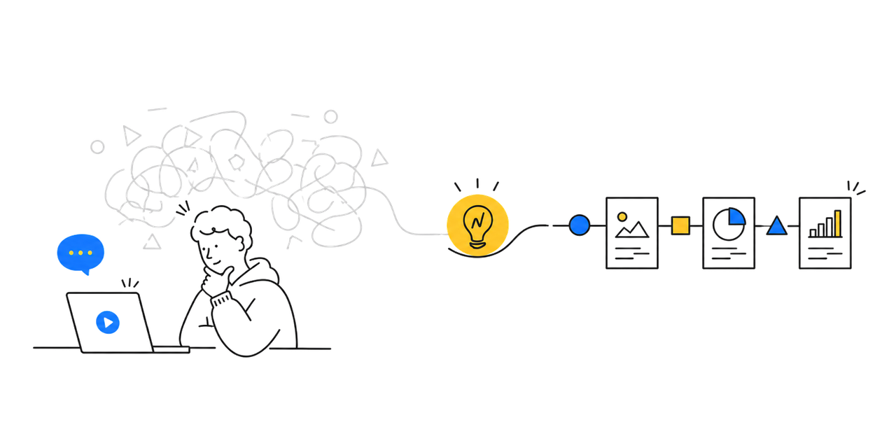
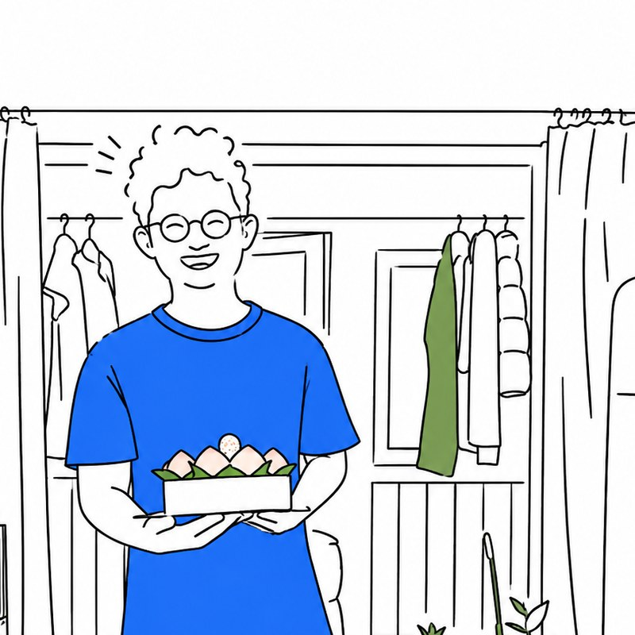

Designer · 设计师 · Portfolio 2026
From clutter to clarity.
I help people make sense of complexity — through structure, rhythm and quiet decisions.
-
Zhao Yuanxuan · 赵元轩
Senior product designer working across data, decision systems and AI-native interfaces — 10+ years turning ambiguity into structure.
-
Looking for a Good Product
Open to teams building meaningful tools where design judgement and engineering rigor meet on equal terms.
-
Beijing · 39.9° N · 2026
Based in Beijing, working with global teams on long-horizon design — calm pace, sharp questions, lasting systems.
About

10+ 年数字产品体验设计经验，横跨大型平台与高速成长型创业公司。 致力于设计帮助人们理解复杂性的系统，并探索 AI 时代下的交互设计与体验体系。
- Name
- 赵元轩 · Zhao Yuanxuan
- Title
- Last Stand Designer
- Location
- Beijing, CN
- Years
- 10+
- Status
- Looking for Good Product
- Contact
- +86 188-1131-4191
Career
-
24.04 — 至今快手 交互设计专家 E10
-
01
负责人力资源线 — 组织发展 ToB、ToC 相关体验设计，并制定与指导设计规范
-
02
负责 HR 业务部门的 AI、低代码平台等创新项目的交互体验设计
-
01
-
23.02 — 24.04零洞科技
-
01
负责零洞智慧家（智能家居）相关体验设计
-
01
-
22.01 — 23.01腾讯 交互设计专家 D10
-
01
负责腾讯地图基线与导航模块交互设计；0–1 搭建并完善组件库相关设计原则并推动落地
-
01
-
21.08 — 21.12爱奇艺 设计经理 8级
-
01
负责海外事业部全端产品（移动端、PC 端、TV 端）与垂直模块的设计优化与设计策略
-
01
-
17.12 — 21.05顺丰同城 交互负责人
-
01
负责顺丰同城急送用户侧、商家侧、骑士配送侧、骑士管理侧、业务运维侧等 ToC 和 ToB 业务2017 – 2021
-
02
0–1–100 搭建与完善交互团队，带领团队赋能业务，创新设计价值2017 – 2021
-
01
-
14.12 — 17.11搜狗搜索 高级交互设计师
-
15.01北京理工大学 设计学硕士
Design Beliefs
-
01
复杂系统需要结构化表达
-
02
AI 时代，设计的核心是判断力与品味
-
03
好的体验设计，本质是降低认知摩擦
-
04
Design surface, understand the deep.
Selected Work
A short list of projects that defined how I think — across AI, data, mobility, and platform systems.
-
组织决策系统提效
如何让管理者更高效地判断团队成绩分布、做出公正公平的裁决。
-
图表选型引擎
把"凭感觉选图"抽象为 47 条规则、Top-1 准确率 89%。
-
履约体验治理
用户 · 骑士 · 平台三方系统的体验与效率重构。
-
地图组件体系
从分散设计资产到可复用 · 可演进的设计基础设施。
-
沉浸式观影体验
从"易用"到"沉浸"：在内容消费节奏与付费链路之间重建感知秩序。
-
设计工作体系
从"做页面"到"做系统"：让设计资源在复杂业务里持续创造价值。
More case studies on request.
Contact
For collaborations, work inquiries, or quiet conversations.
Currently looking for a good product — open to design leadership, founding design, and AI-native product roles.
Long-term Focus
Cognitive Design
Designing for how minds make sense of systems.
Human-Centered Design
People before pixels, behavior before opinions.
Efficiency & Emotion
Calm interfaces that respect both intent and feeling.